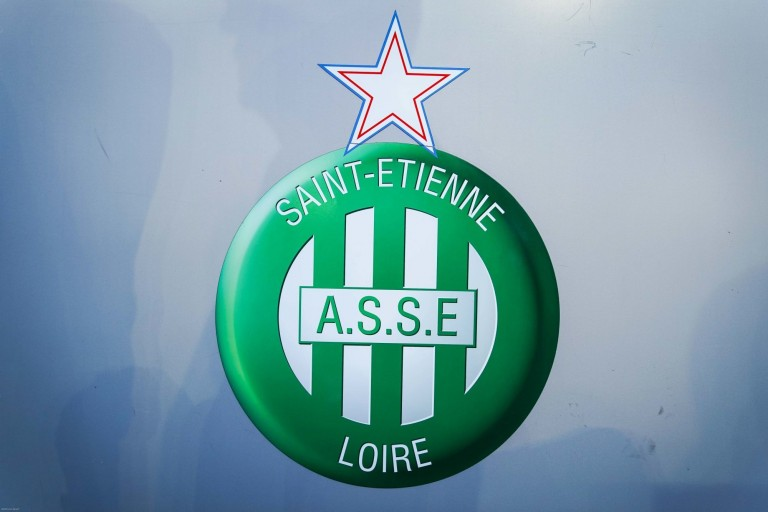
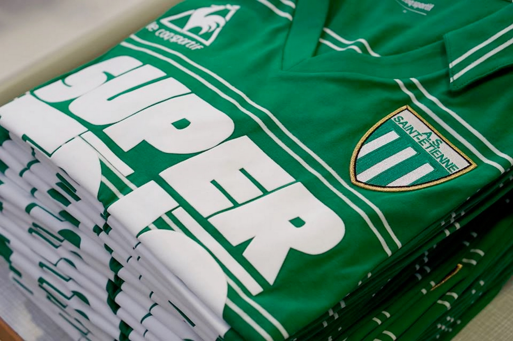

L'association
Les Magic Fans sont un groupe créé le 20 juillet 1991. Ce groupe est installé dans le Kop Nord à Geoffroy Guichard (Saint-Étienne). Les Magic Fans assurent un soutien oral lors des rencontres de l'ASSE tout en proposant des tifos et diverses animations pyrotechniques.
Unis pour défendre

Une ville

Un club
